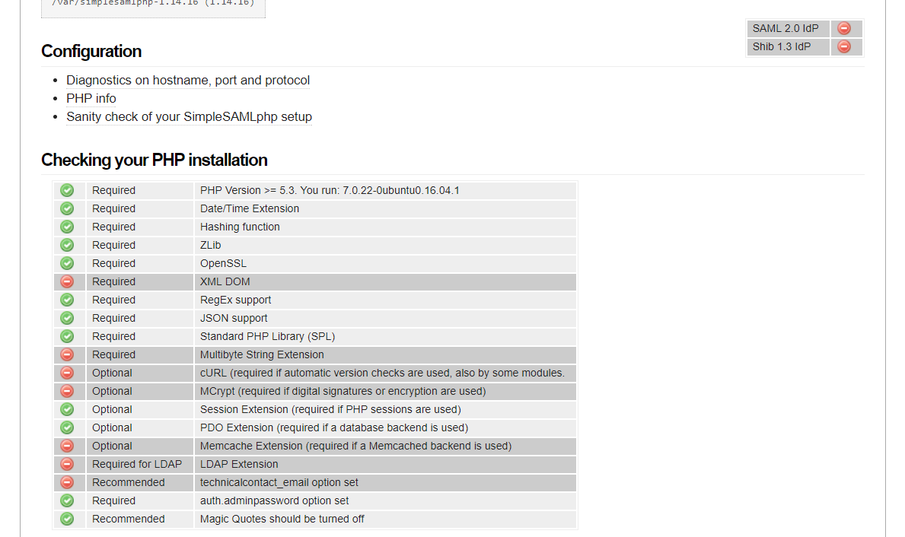

$ cd /var
$ wget -O ssp.tgz https://simplesamlphp.org/download?latest
$ tar -xzf ssp.tgz
$ ln -s simplesamlphp-1.14.x simplesamlphp
$ rm ssp.tgz
/etc/apache/site-enabled/sito...
SetEnv SIMPLESAMLPHP_CONFIG_DIR /var/simplesamlphp/config
Alias /simplesaml /var/simplesamlphp/www
<Directory /var/simplesamlphp/www>
# For Apache 2.4:
Require all granted
</Directory>
$ apache2ctl configtest
$ riavvio...
Scegliere "Configuration" in https://localhost/simplesaml/
File di configurazione e metadata sono in PHP
/var/simplesamlphp/config/config.php
'baseurlpath' => 'simplesaml/',
'auth.adminpassword' => '1234',
'secretsalt' => ...
'technicalcontact_name' => 'Supporto Tecnico',
'technicalcontact_email' => 'idem-corso@garr.it',
'language.default' => 'it',
'timezone' => 'Europe/Rome',
Si possono fare operazioni!
'baseurlpath' => 'https://' . $_SERVER['HTTP_HOST'] . '/simplesaml/',
Entrare con admin:1234
Nella sessione PHP vengono salvati i dati SP
/var/simplesamlphp/config/config.php
'store.type' => ...,
Lo store phpsession è problematico nell'interazione con altre applicazioni.
/var/simplesamlphp/config/config.php
'store.type' => 'memcache',
Ridondanza gestita da SSP, adatto per IdP
I dati SP salvati in un DB via PDO
/var/simplesamlphp/config/config.php
'store.type' => 'sql',
// DSN PDO
'store.sql.dsn' => 'mysql:host=localhost;port=3307;dbname=testdb',
/var/simplesamlphp/config/config.php
'store.sql.dsn' => 'sqlite:/tmp/simplesamlphp.sq3',
Semplice e poco intrusivo. In caso di riavvio le sessioni
vanno perse
(ma è probabile che
neppure l'applicazione sopravviva al riavvio)
$ cd /var/simplesamlphp/cert
$ openssl req -new -x509 -days 3652 -nodes -out sp-cert.pem -keyout sp-key.pem
Per l'esercizio, copiamo quelli di Shibboleth
$ cp /etc/shibboleth/sp-key.pem /var/simplesamlphp/cert/
$ cp /etc/shibboleth/sp-cert.pem /var/simplesamlphp/cert/
$ chown www-data /var/simplesamlphp/cert/sp-key.pem
config/authsources.php
$config = array(
'sp-idem' => array(
'saml:SP',
'entityID' => 'https://corso-sp.example/simplesaml',
'privatekey' => 'sp-key.pem',
'certificate' => 'sp-cert.pem',
'idp' => NULL, // Specificare un IdP o
'discoURL' => NULL, // un Discovery Service
...
Dalla console, "Autenticazione" https://localhost/simplesaml/module.php/core/authenticate.php
Scegliere "Federazione" in https://localhost/simplesaml/
Il formato nativo è PHP
$metadata['https://corso-sp.example/simplesaml'] = array (
'SingleLogoutService' =>
array (
0 =>
array (
'Binding' => 'urn:oasis:names:tc:SAML:2.0:bindings:HTTP-Redirect',
'Location' => 'https://localhost/simplesaml/.../sp-idem',
),
),
'AssertionConsumerService' =>
array (
0 =>
array (
'index' => 0,
'Binding' => 'urn:oasis:names:tc:SAML:2.0:bindings:HTTP-POST',
'Location' => 'https://localhost/simplesaml/.../sp-idem',
),
1 =>
array (
'index' => 1,
'Binding' => 'urn:oasis:names:tc:SAML:1.0:profiles:browser-post',
...
),
'certData' => 'MIIC3DCCAcSgAwIBAgIJAJihXTdsMG...',
);
Da mandare a IdP o federazione
https://localhost/simplesaml/module.php/saml/sp/metadata.php/sp-idem
SSP fornisce un tool di conversione XML → PHP, sempre nel tab "Federazione"
metadata/saml20-idp-remote.php
metadata/saml20-idp-remote.php
$metadata['urn:example:idem:corso2017'] = array(
'name' => array(
it' => 'IdP di test per il corso',
),
'SingleSignOnService' => 'https://idp-corso/...',
'SingleLogoutService' => 'https://idp-corso/...',
'certFingerprint' => 'BF:3E:8D:4C:7A:ED:C2:D1:...',
);
$ openssl x509 -fingerprint -noout -in server.crt
Possibile usare sorgenti multiple
config/config.php
'metadata.sources' => array(
array('type' => 'flatfile'),
array('type' => 'flatfile', 'directory' => 'metadata-generated'),
array('type' => 'xml', 'file' => 'idp.example.org-idpMeta.xml'),
array('type' => 'mdx', server => 'http://mdx.server.com:8080',
'cachedir' => '/var/simplesamlphp/mdx-cache',
'cachelength' => 86400),
array('type' => 'pdo'),
),
È sempre possibile gestirli a mano; anche questo è PHP e si può intevenire da codice (es. inclusione di file esterni)
SSP comprende un modulo (metarefresh)
per l'aggiornamento automatico dei metadata di federazione
$ cd /var/simplesamlphp
$ touch modules/metarefresh/enable
$ modules/metarefresh/bin/metarefresh.php↩
http://www.garr.it/idem-metadata/idem-metadata-sha256.xml
I metadata si troveranno in
/var/simplesamlphp/metadata-generated
| Riferimenti | https://simplesamlphp.org/docs/1.14/simplesamlphp-automated_metadata |
Redirige direttamente ad un IdP (ha la precedenza)
config/authsources.php
'sp-idem' => array(
...
'idp' => 'urn:example:idem:corso2017',
...
Usa un DS "basic"
config/authsources.php
'sp-idem' => array(
...
'idp' => NULL, 'discoURL' => NULL
...
config/authsources.php
'sp-idem' => array(
...
'discoURL' => 'https://wayf.idem-test...',
...
metadata/saml20-idp-remote.php
...
'OrganizationName' => 'IDEM',
'OrganizationDisplayName' =>
'Federazione IDEM',
'OrganizationURL' =>
'http://www.idem.it',
...
/var/www/html/app/index.php
<?php
require_once('/var/simplesamlphp/lib/_autoload.php');
$as = new SimpleSAML_Auth_Simple('sp-idem');
if (!$as->isAuthenticated()) {
$as->login();
}
$attributes = $as->getAttributes();
print_r($attributes);
Attivare il logging:
config/config.php
'debug' => TRUE,
'logging.level' => SimpleSAML_Logger::INFO,
'logging.handler' => 'file',